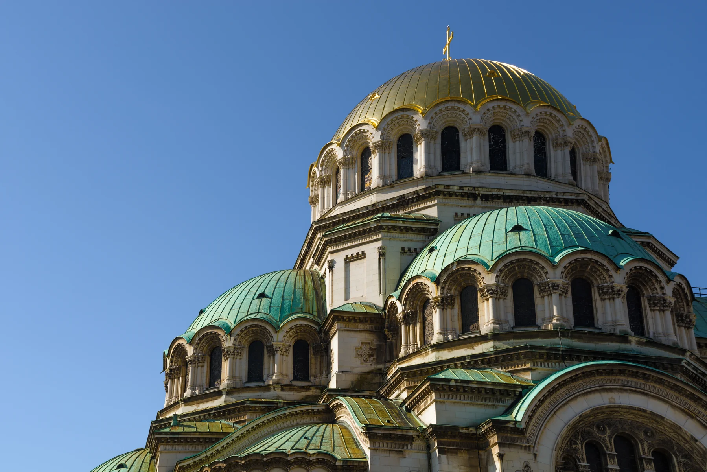
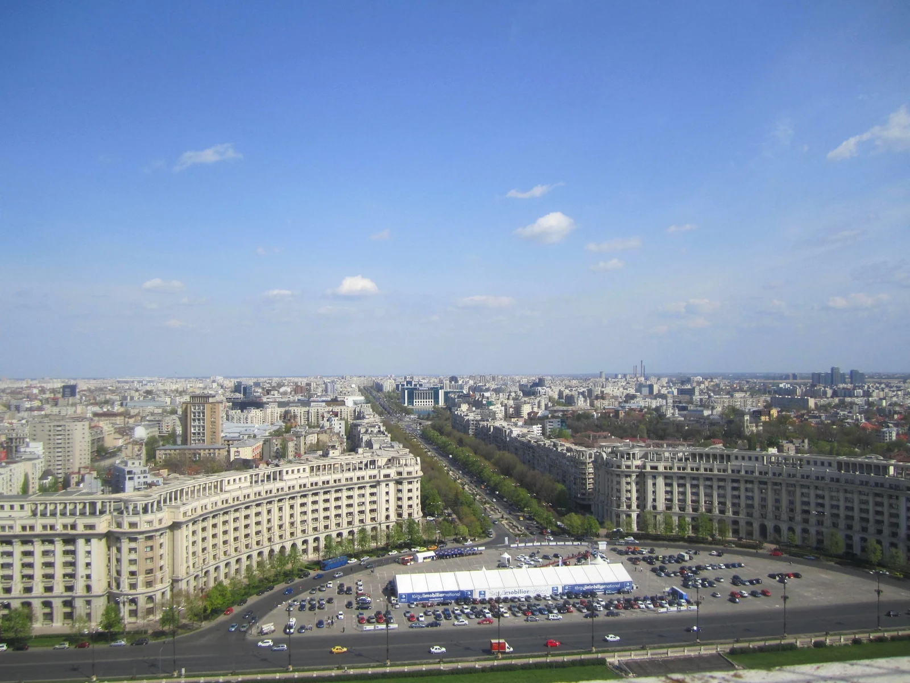
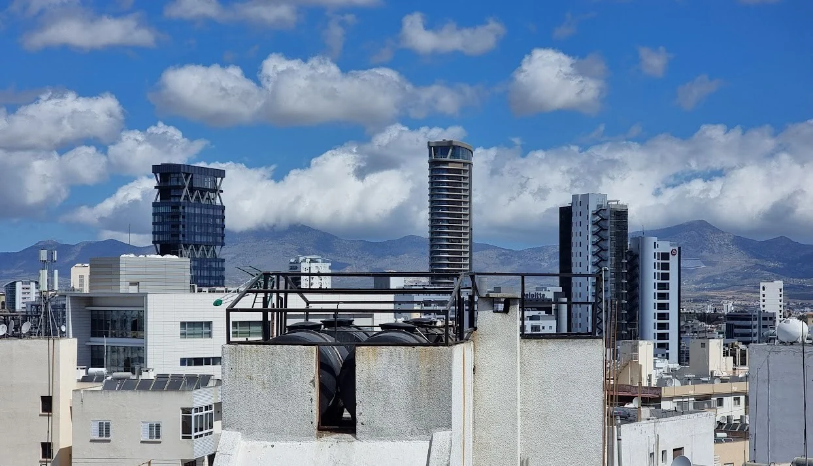

Σύσταση εταιρειών
Εταιρικές υπηρεσίες στην Ελλάδα, στη Βουλγαρία, στη Ρουμανία και στην Κύπρο.




Ελλάδα
Σύσταση εταιρειών και νομική υποστήριξη για την ίδρυση ή εγκατάσταση αλλοδαπών εταιρειών, θυγατρικών και υποκαταστημάτων στην Ελλάδα.
Email για την ΕλλάδαΑνοίγει την εφαρμογή email σας με συμπληρωμένο θέμα.
Βουλγαρία
Σύσταση εταιρειών και υποστήριξη επενδυτικών δραστηριοτήτων μέσω συνεργατών στη Βουλγαρία, με συμβουλευτικές, λογιστικές και νομικές υπηρεσίες.
Email για τη ΒουλγαρίαΑνοίγει την εφαρμογή email σας με συμπληρωμένο θέμα.
Ρουμανία
Υπηρεσίες σύστασης εταιρειών στη Ρουμανία.
Email για τη ΡουμανίαΑνοίγει την εφαρμογή email σας με συμπληρωμένο θέμα.
Κύπρος
Μέσω συνεργατών στην Κύπρο: εγγραφή, σύσταση και διαχείριση εταιρείας, καθώς και υπηρεσίες ανοίγματος ή διαχείρισης τραπεζικού λογαριασμού.
Email για την ΚύπροΑνοίγει την εφαρμογή email σας με συμπληρωμένο θέμα.